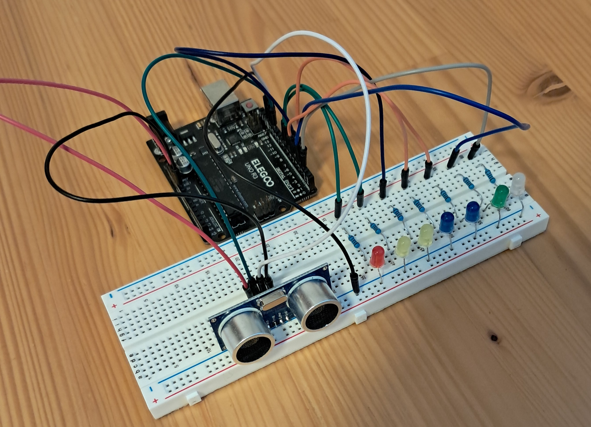

This project utilizes an Elegoo (Arduino) Uno R3 microcontroller, an HC-SR04 ultrasonic sensor, seven LEDs, and corresponding 220-ohm resistors to create a visual distance indicator. The HC-SR04 sensor works by emitting ultrasonic waves and measuring the time it takes for them to bounce back after hitting an object. The Arduino processes this data to calculate the distance of the object from the sensor. As the object gets closer, more LEDs light up in sequence, providing an intuitive visual representation of proximity. This project is a great way to understand distance sensing and microcontroller-based control systems, making it suitable for beginners and hobbyists interested in electronics and programming.
I first came across a similar project while browsing the internet, specifically on, and was intrigued by how simple yet effective it was in visualizing distance using LEDs. Seeing how others had implemented it inspired me to test it myself and gain hands-on experience. You can check out the original project HERE
From working on this Arduino project, I learned a lot about both hardware and software components. I gained hands-on experience with connecting various electronic components like sensors and LEDs to the Arduino board, which helped me understand how these components interact in a circuit. On the software side, I learned how to write and upload code to the Arduino using the Arduino IDE, as well as how to troubleshoot and debug issues with the code. Additionally, I became more familiar with basic programming concepts such as loops, conditionals, and input/output handling, all of which are essential for creating interactive and functional projects. Overall, this project improved my problem-solving skills and deepened my understanding of electronics and programming.